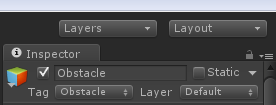
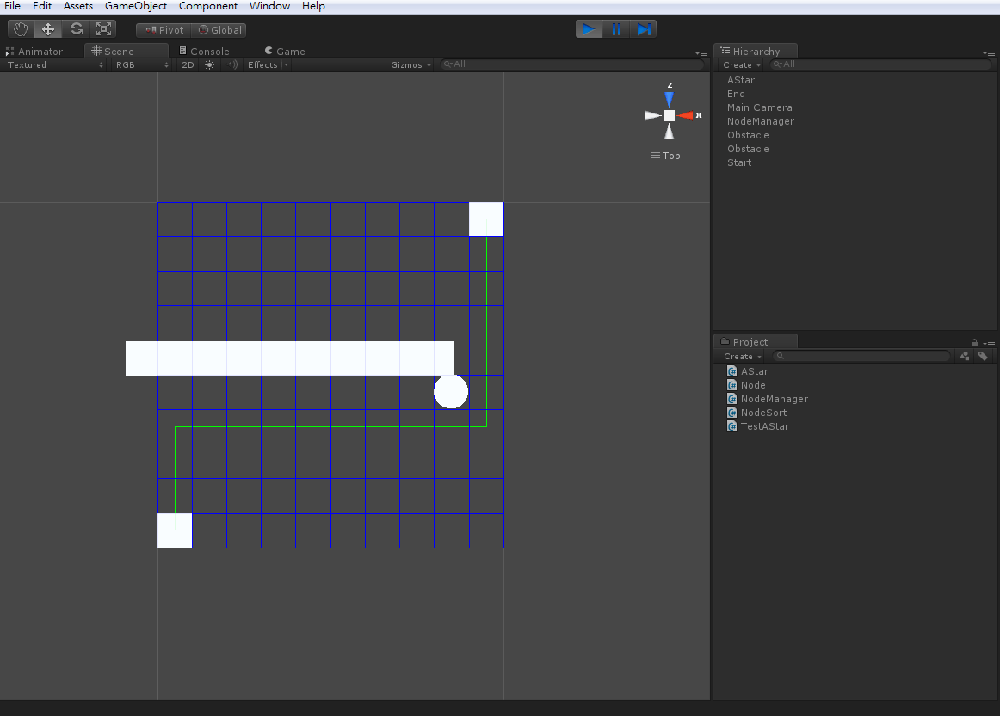

在上一篇中我們已經完成了 A* 尋路的功能了
但是缺少了障礙物判定的方法
如果有認真看每一篇教學的讀者會發現
在一開始定義 Node 時，有一個 isObstacle 參數用來判斷該 Node 是不是障礙物
在這一篇我們就是要將它實現出來
找到 NodeManager.cs 腳本
找到其中的 CreateNode 方法
void CreateNodes()
{
nodes = new Node[numOfColumns, numOfRows];
for (int col = 0; col < numOfColumns; col++)
{
for (int row = 0; row < numOfRows; row++)
{
Vector3 cellPos = GetNodePosition(col, row);
Node node = new Node(cellPos);
nodes[col, row] = node;
}
}
}將它改寫成
void CreateNodes()
{
nodes = new Node[numOfColumns, numOfRows];
for (int col = 0; col < numOfColumns; col++)
{
for (int row = 0; row < numOfRows; row++)
{
Vector3 cellPos = GetNodePosition(col, row);
Node node = new Node(cellPos);
nodes[col, row] = node;
//Obstacle Update
cellPos -= new Vector3( 0, 100, 0 );
RaycastHit hit;
Ray ray = new Ray( cellPos, new Vector3( 0, 1, 0 ) );
if( Physics.Raycast( ray , out hit, 1000 ) )
{
if( hit.transform.tag == "Obstacle" )
nodes[col, row].MarkAsObstacle();
}
}
}
}
接著在場景中加入任一包含 Collider 的物件
並將其 Tag 設定為 Obstacle

